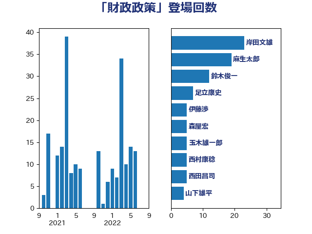

単語「財政政策」

| 岸田文雄 | 自由民主党 | 23 回 |
| 麻生太郎 | 自由民主党 | 19 回 |
| 鈴木俊一 | 自由民主党 | 12 回 |
| 足立康史 | 日本維新の会 | 7 回 |
| 伊藤渉 | 公明党 | 5 回 |
| 森屋宏 | 自由民主党 | 5 回 |
| 玉木雄一郎 | 国民民主党 | 5 回 |
| 西村康稔 | 自由民主党 | 5 回 |
| 西田昌司 | 自由民主党 | 5 回 |
| 山下雄平 | 自由民主党 | 4 回 |
| 牧山ひろえ | 立憲民主党 | 4 回 |
| 佐藤信秋 | 自由民主党 | 3 回 |
| 泉健太 | 立憲民主党 | 3 回 |
| 豊田俊郎 | 自由民主党 | 3 回 |
| 世耕弘成 | 自由民主党 | 2 回 |
| 加藤勝信 | 自由民主党 | 2 回 |
| 務台俊介 | 自由民主党 | 2 回 |
| 和田義明 | 自由民主党 | 2 回 |
| 山本博司 | 公明党 | 2 回 |
| 山際大志郎 | 自由民主党 | 2 回 |
| 櫛渕万里 | れいわ新選組 | 2 回 |
| 沢田良 | 日本維新の会 | 2 回 |
| 浅田均 | 日本維新の会 | 2 回 |
| 浜田聡 | NHK党 | 2 回 |
| 石川昭政 | 自由民主党 | 2 回 |
| 礒崎哲史 | 国民民主党 | 2 回 |
| 赤澤亮正 | 自由民主党 | 2 回 |
| 階猛 | 立憲民主党 | 2 回 |
| 音喜多駿 | 日本維新の会 | 2 回 |
| 上田清司 | 国民民主党 | 1 回 |
| 上野賢一郎 | 自由民主党 | 1 回 |
| 上野通子 | 自由民主党 | 1 回 |
| 中川正春 | 立憲民主党 | 1 回 |
| 中西健治 | 自由民主党 | 1 回 |
| 井林辰憲 | 自由民主党 | 1 回 |
| 伊藤孝恵 | 国民民主党 | 1 回 |
| 北村経夫 | 自由民主党 | 1 回 |
| 古賀友一郎 | 自由民主党 | 1 回 |
| 大塚耕平 | 国民民主党 | 1 回 |
| 山口俊一 | 自由民主党 | 1 回 |
| 山本順三 | 自由民主党 | 1 回 |
| 木原誠二 | 自由民主党 | 1 回 |
| 杉久武 | 公明党 | 1 回 |
| 福山哲郎 | 立憲民主党 | 1 回 |
| 竹内譲 | 公明党 | 1 回 |
| 舞立昇治 | 自由民主党 | 1 回 |
| 阿達雅志 | 自由民主党 | 1 回 |
| 馬場伸幸 | 日本維新の会 | 1 回 |
| 高木毅 | 自由民主党 | 1 回 |